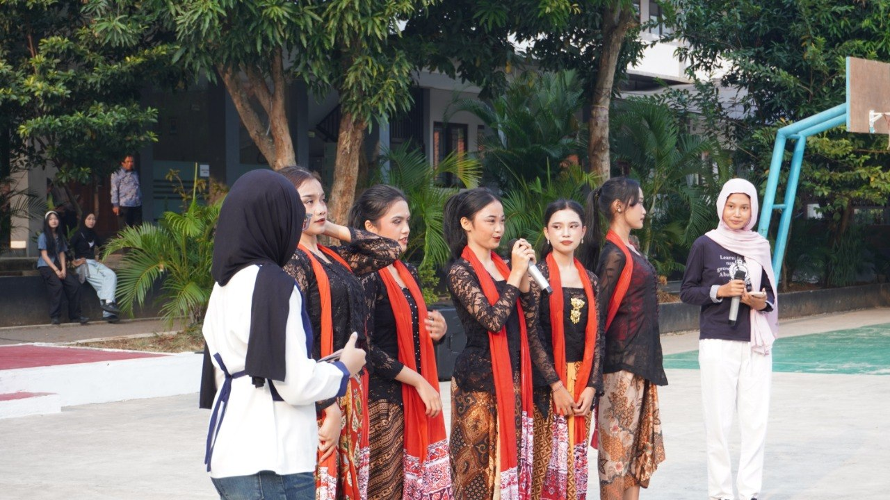
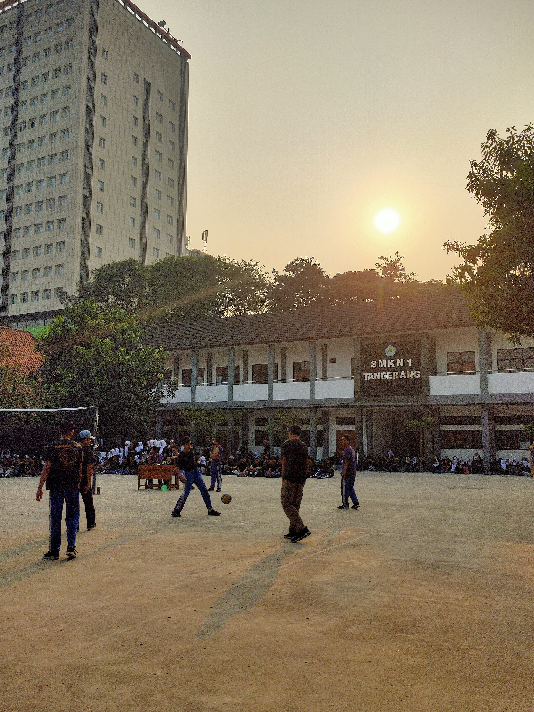

Website BimoCarilah Rumah Ternyamanmu. |
|
| Beranda | Profil | Kegiatan | Kontak | |
Kegiatan Sekolah Smkn 1 Tangerang KEGIATAN PADA SETIAP KAMIS DI NESTA YAITU APRESIASI Pendidikan sejatinya tidak hanya diukur dari pencapaian akademis di dalam ruang kelas, melainkan juga dari bagaimana seorang individu mampu menemukan, mengasah, dan mengekspresikan potensi terbaik yang ada di dalam dirinya. Sebagai bentuk komitmen nyata dalam mendukung perkembangan holistik para peserta didik, sekolah kita kembali menyelenggarakan perhelatan akbar bertajuk "Gelar Apresiasi dan Kreasi Siswa". Acara yang dikemas secara apik dan profesional ini bukan sekadar agenda rutin tahunan, melainkan sebuah ruang perayaan atas dedikasi, kerja keras, dan keberagaman minat serta bakat yang dimiliki oleh seluruh civitas akademika, khususnya para siswa."Peringatan Hari Ulang Tahun Kemerdekaan Republik Indonesia di lingkungan sekolah kita pada tahun ini berlangsung dengan tertib, khidmat, dan penuh antusiasme. Berbagai perlombaan yang diselenggarakan bukan semata-mata sebagai ajang rekreasi, melainkan sebagai instrumen pendidikan karakter bagi para siswa. Melalui kompetisi yang membutuhkan ketangkasan dan kerja sama, seluruh sivitas akademika diajak untuk merefleksikan kembali nilai-nilai gotong royong, sportivitas, serta semangat pantang menyerah dari para pahlawan bangsa. Kegiatan ini diharapkan dapat terus memperkokoh rasa nasionalisme, mempererat tali persaudaraan antarwarga sekolah, dan melatih daya juang generasi muda."  | |